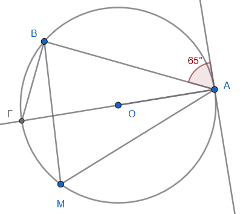
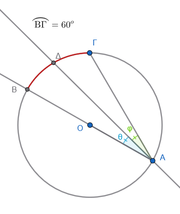
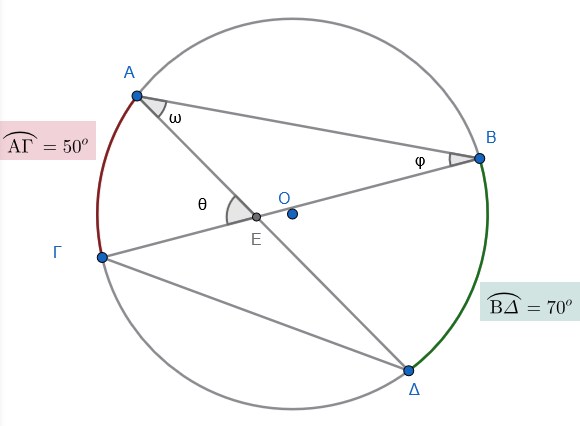
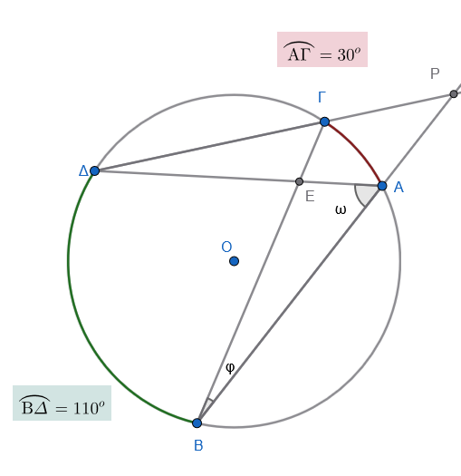
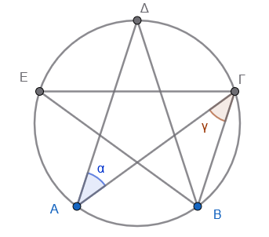

1 Εγγεγραμμένη γωνία
Μια εγγεγραμμένη γωνία είναι η γωνία της οποίας η κορυφή βρίσκεται πάνω σε έναν κύκλο και οι πλευρές της τέμνουν τον κύκλο αυτό. Το τμήμα του κύκλου που βρίσκεται ανάμεσα στις πλευρές της ονομάζεται αντίστοιχο τόξο της.
Μια επίκεντρη γωνία είναι η γωνία που έχει την κορυφή της στο κέντρο ενός κύκλου και οι πλευρές της είναι ακτίνες του κύκλου αυτού.
- Πλήρης κύκλος: Ένας ολόκληρος κύκλος αντιστοιχεί σε μια επίκεντρη γωνία \(360^\circ\).
Μετακινώντας το σημείο Ρ (ακτίνα του κύκλου), αλλάζετε μέγεθος στον κύκλο. Τι παρατηρείτε ; Τι συμβαίνει με το μέγεθος της γωνίας και του αντίστοιχου τόξου;.
Μετακινήστε το σημείο Β ή το σημείο Γ για να αλλάξετε την γωνία. Τι παρατηρείτε; Τι συμβαίνει με τα μεγέθη της γωνίας και του τόξου;
1.1 Συμπεράσματα - Ιδιότητες
Σχέση με την επίκεντρη: Κάθε εγγεγραμμένη γωνία ισούται με το μισό της επίκεντρης γωνίας που έχει το ίδιο αντίστοιχο τόξο.
Μέτρο τόξου: Το μέτρο της εγγεγραμμένης γωνίας είναι ίσο με το μισό του μέτρου του αντίστοιχου τόξου της.
Μετακινήστε το σημείο Α για να αλλάξετε την κορυφή της γωνία; πάνω στον κύκλο.
Κάθε νέα θέση αντιστοιχεί σε μιά νέα εγγεγραμμένη γωνία.
Τι παρατηρείτε; Τι συμβαίνει με τα μεγέθη των γωνιών και του τόξου;
- Γωνίες στο ίδιο τόξο: Όλες οι εγγεγραμμένες γωνίες που βαίνουν στο ίδιο τόξο (ή σε ίσα τόξα) είναι ίσες μεταξύ τους.
Κάντε την επίκεντρη γωνία \(180^ο\) μετακινώντας το σημείο Β ή Γ. Επιλέξτε το σημείο και πατήστε Shift + Βελάκια.
Τι παρατηρείτε; Τι συμβαίνει με τα μεγέθη των γωνιών και του τόξου;
- Γωνία σε ημικύκλιο: Κάθε εγγεγραμμένη γωνία που βαίνει σε ημικύκλιο είναι πάντα ορθή (90°).
1.2 Ασκήσεις
Βασικές Ασκήσεις (Κατανόηση)
- Υπολογισμός Τόξου: Σε έναν κύκλο \((O, \rho)\), μια επίκεντρη γωνία \(\widehat{AOB}\) είναι \(70^\circ\). Πόσες μοίρες είναι το αντίστοιχο (μικρό) τόξο \(\overparen{AB}\);
- Σχέση Γωνιών: Μια εγγεγραμμένη γωνία \(\widehat{A\Gamma B}\) βαίνει στο τόξο \(\overparen{AB}\), το οποίο είναι \(120^\circ\). Να βρείτε το μέτρο της γωνίας \(\widehat{A\Gamma B}\).
- Από Εγγεγραμμένη σε Επίκεντρη: Αν μια εγγεγραμμένη γωνία \(\widehat{M}\) είναι \(45^\circ\), πόσο είναι το μέτρο της αντίστοιχης επίκεντρης γωνίας που βαίνει στο ίδιο τόξο;
- Ημικύκλιο: Δίνεται ένας κύκλος με διάμετρο \(AB\). Αν πάρουμε ένα τυχαίο σημείο \(\Gamma\) πάνω στον κύκλο, πόσες μοίρες είναι η εγγεγραμμένη γωνία \(\widehat{A\Gamma B}\);
- Σχέση Εγγεγραμμένης και Επίκεντρης: Αν μια επίκεντρη γωνία σε έναν κύκλο είναι \(80^\circ\), πόσες μοίρες είναι η εγγεγραμμένη γωνία που βαίνει στο ίδιο τόξο;
Σκεπτικό: Κάθε εγγεγραμμένη γωνία ισούται με το μισό της επίκεντρης που έχει το ίδιο αντίστοιχο τόξο.
- Υπολογισμός Γωνιών Τριγώνου: Σε έναν κύκλο θεωρούμε τρία σημεία \(Α, Β, Γ\) έτσι ώστε το τόξο \(AB = 120^\circ\) και το τόξο \(BΓ = 100^\circ\). Υπολογίστε τις γωνίες του τριγώνου \(ABΓ\).
Σκεπτικό: Η εγγεγραμμένη γωνία έχει μέτρο ίσο με το μισό του μέτρου του αντίστοιχου τόξου της (π.χ. \(\hat{A} = \dfrac{\overparen{BΓ}}{2}\)).
Ασκήσεις Εφαρμογής (Συνδυαστικές)
- Τρίγωνο και Κύκλος: Σε έναν κύκλο, μια χορδή \(AB\) είναι ίση με την ακτίνα του κύκλου \(\rho\).
- α) Υπολογίστε την επίκεντρη γωνία \(\widehat{AOB}\).
- β) Υπολογίστε μια εγγεγραμμένη γωνία \(\widehat{A\Gamma B}\) που βαίνει στο τόξο \(\overparen{AB}\).
Άθροισμα Τόξων: Ένας κύκλος χωρίζεται από τρία σημεία \(A, B, \Gamma\) σε τρία τόξα \(\overparen{AB}, \overparen{B\Gamma}, \overparen{\Gamma A}\) που έχουν αναλογία \(2:3:4\). Να βρείτε τις μοίρες κάθε τόξου και τις γωνίες του τριγώνου \(AB\Gamma\).
Ορθογώνιο Τρίγωνο: Σε κύκλο \((O, \rho)\), το τόξο \(\overparen{AB}\) είναι \(80^\circ\). Αν η χορδή \(A\Gamma\) είναι διάμετρος, βρείτε όλες τις γωνίες του τριγώνου \(AB\Gamma\).
Παράλληλες Χορδές: Σε έναν κύκλο φέρνουμε δύο παράλληλες χορδές \(AB\) και \(\Gamma \Delta\). Αν το τόξο \(\overparen{A\Gamma}\) είναι \(50^\circ\), αποδείξτε ότι το τόξο \(\overparen{B\Delta}\) είναι επίσης \(50^\circ\) και υπολογίστε την εγγεγραμμένη γωνία που βαίνει στο τόξο \(\overparen{B\Delta}\).
tip: Σχεδιάστε την τέμνουσα ΒΓ. (Εντός εναλλάξ γωνίες ………………)Εύρεση Τόξου από Γωνία: Αν μια εγγεγραμμένη γωνία \(\phi\) είναι \(25^\circ\), πόσο είναι το μέτρο του αντίστοιχου τόξου στο οποίο βαίνει;
Σκεπτικό: Το τόξο είναι διπλάσιο της αντίστοιχης εγγεγραμμένης γωνίας.
- Άλγεβρα και Τόξα: Σε κύκλο με διάμετρο \(BΔ\), τα διαδοχικά τόξα \(BΓ\) και \(ΓΔ\) εκφράζονται ως \(5x + 10^\circ\) και \(x + 50^\circ\) αντίστοιχα. Βρείτε την τιμή του \(x\).
Σκεπτικό: Εφόσον η \(BΔ\) είναι διάμετρος, το άθροισμα των τόξων \(BΓ + ΓΔ\) ισούται με ένα ημικύκλιο (\(180^\circ\)).
- Γωνίες στο ίδιο Τόξο: Αν δύο εγγεγραμμένες γωνίες \(\hat{\alpha}\) και \(\hat{\beta}\) βαίνουν στο ίδιο τόξο \(BΓ\), ποια είναι η σχέση μεταξύ τους;
Σκεπτικό: Οι εγγεγραμμένες γωνίες ενός κύκλου που βαίνουν στο ίδιο τόξο είναι μεταξύ τους ίσες.
Προχωρημένες Ασκήσεις (Σύνθετες)
Τετράπλευρο σε Κύκλο: Σε έναν κύκλο είναι εγγεγραμμένο τετράπλευρο \(AB\Gamma \Delta\). Αν η γωνία \(\widehat{A}\) είναι \(85^\circ\), πόσες μοίρες είναι η απέναντι γωνία \(\widehat{\Gamma}\);
(Υπόδειξη: Σκεφτείτε τα τόξα στα οποία βαίνουν, τι άθροισμα έχουν;).Σύνθετο Σχήμα: Δίνεται κύκλος \((O, \rho)\) και μια επίκεντρη γωνία \(\widehat{AOB} = 100^\circ\). Προεκτείνουμε την ακτίνα \(AO\) προς το μέρος του \(O\) μέχρι να τμήσει τον κύκλο στο σημείο \(\Gamma\). Υπολογίστε τη γωνία \(\widehat{B\Gamma A}\) και το τόξο \(\overparen{B\Gamma}\).
Δείκτες Ρολογιού: Πόσες μοίρες τόξο διαγράφει η άκρη του ωροδείκτη ενός ρολογιού σε \(3\) ώρες;
Σκεπτικό: Οι \(12\) ώρες αντιστοιχούν σε πλήρη κύκλο \(360^\circ\), οπότε οι \(3\) ώρες αντιστοιχούν στο \(1/4\) του κύκλου (\(90^\circ\)).
- Τρίγωνο με Αναλογία Τόξων: Σε ημικύκλιο διαμέτρου \(AB = 6\text{ cm}\), δίνεται σημείο \(Γ\) τέτοιο ώστε το τόξο \(AΓ\) να είναι διπλάσιο από το τόξο \(BΓ\). Υπολογίστε τις γωνίες του τριγώνου \(ABΓ\). Σκεπτικό: Το άθροισμα των τόξων \(AΓ + BΓ\) είναι \(180^\circ\). Με την αναλογία \(2:1\), βρίσκουμε τα τόξα και στη συνέχεια τις εγγεγραμμένες γωνίες.
Πιο σύνθετες ασκήσεις
Παράλληλες Χορδές Σε έναν κύκλο, οι χορδές \(AB\) και \(\Gamma \Delta\) είναι παράλληλες. Αν το τόξο \(A\Gamma\) είναι \(40^{\circ}\) και το τόξο \(AB\) είναι \(100^{\circ}\), υπολόγισε:
Το μέτρο του τόξου \(B\Delta\).
Το μέτρο του τόξου \(\Gamma \Delta\) (αν γνωρίζεις ότι τα τόξα \(AB\) και \(\Gamma \Delta\) δεν τέμνονται).
Το Εγγεγραμμένο Τετράπλευρο Ένα τετράπλευρο \(ABΓΔ\) είναι εγγεγραμμένο σε κύκλο. Αν η γωνία \(\hat{A}\) είναι \(2x + 10^{\circ}\) και η απέναντι γωνία \(\hat{Γ}\) είναι \(x + 20^{\circ}\):
- Βρες την τιμή του \(x\)
- Υπολόγισε τις γωνίες \(\hat{A}\) και \(\hat{Γ}\).
(Σκέψου: άν η γωνια Α ήταν \(50^ο\), πόσο θα είναι το αντίστοιχο της τόξο ΒΓ; Πόσο θα είναι το μεγάλο συμπληρωματικό τόξο ΒΓ; άρα πόση θα είναι η γωνία \(\hatΓ\); Προσθεσέτε τες. Πόσο κάνει; \(180^{\circ}\)).
Συνέχισε με την άσκηση.
- Γωνία Χορδής και Εφαπτομένης Σε ένα σημείο \(A\) ενός κύκλου φέρνουμε την εφαπτομένη \((\epsilon)\). Από το \(A\) φέρνουμε μια χορδή \(AB\) που σχηματίζει με την εφαπτομένη γωνία \(65^{\circ}\).
- Πόσες μοίρες είναι το τόξο \(AB\);
- Αν \(M\) είναι ένα σημείο στο μεγάλο τόξο \(AB\), πόσες μοίρες είναι η εγγεγραμμένη γωνία \(A\hat{M}B\);

(Σκέψου: Η εφαπτομένη είναι κάθετη στην ακτίνα. Άρα πόσο θα είναι η γωνία \(\widehat{ΟΑΒ}\). Προέκτεινε την ακτίνα ΟΑ μέχρι να τμήσει τον κύκλο στο σημείο Γ. Τι γωνία είναι η \(\widehat{ΑΒΓ}\); Επομένως πόση είναι η γωνία \(\hatΓ\)). Συνέκρινέ την με τν γωνία \(A\hat{M}B\)
Διάμετρος και Διχοτόμος Έστω κύκλος με διάμετρο \(AB\). Παίρνουμε ένα σημείο \(\Gamma\) στον κύκλο τέτοιο ώστε το τόξο \(B\Gamma\) να είναι \(60^{\circ}\). Φέρνουμε τη διχοτόμο της εγγεγραμμένης γωνίας \(B\hat{A}\Gamma\), η οποία τέμνει τον κύκλο στο σημείο \(\Delta\).
Υπολόγισε τη γωνία \(B\hat{A}\Gamma\).
Υπολόγισε το τόξο \(\Gamma \Delta\).

Τεμνόμενες Χορδές (Εσωτερική Γωνία) Δύο χορδές \(AB\) και \(\Gamma \Delta\) τέμνονται σε ένα σημείο \(E\) μέσα στον κύκλο. Αν το τόξο \(A\Gamma = 50^{\circ}\) και το τόξο \(B\Delta = 70^{\circ}\), υπολόγισε τη γωνία \(A\hat{E}\Gamma\).
Σκέψου ότι: η γωνία \(\hat{ΑΒΓ}\) βαίνει στο τόξο \(\overparen{ΑΓ}\), άρα ……………….. Η γωνία \(\widehat{ΒΑΔ}\) βαίνει στο τόξο \(\overparen{ΒΔ}\), άρα ………………………. Στο τρίγωνο \(\overset{\triangle}{ΑΕΒ}\) μπορείς τώρα να υπολογίσεις την γωνία \(A\hat{E}\Gamma\) (εξωτερική γωνία)

Εξωτερική Γωνία Από ένα σημείο \(P\) έξω από τον κύκλο φέρνουμε δύο τέμνουσες που ορίζουν στον κύκλο δύο τόξα: το μεγάλο τόξο \(110^{\circ}\) και το μικρό τόξο \(30^{\circ}\). Πόσες μοίρες είναι η γωνία \(\hat{P}\) που σχηματίζεται;

Σκέψου: Η \(B\hat{A}Δ\) βαίνει στο τόξο \(\overparen{ΒΔ}\)Η γωνία \(Α\hat{Δ}Γ\) βαίνει στο τόξο \(\overparen{ΑΓ}\)
Στο τρίγωνο \(\overset{\triangle}{ΑΔΡ}\) η γωνία \(Δ\hat{Α}Ρ\) ……………….. . Η γωνία \(A\hat{Δ}Γ\) ισούτε ……………….
Συνεχίστε …………………..
Ισοσκελές Τρίγωνο και Κέντρο Σε κύκλο κέντρου \(O\), το τρίγωνο \(OAB\) είναι ισόπλευρο.
Πόσες μοίρες είναι η επίκεντρη γωνία \(A\hat{O}B\);
Αν \(M\) είναι ένα σημείο στην περιφέρεια του κύκλου (εκτός του τόξου \(AB\)), πόσες μοίρες είναι η γωνία \(A\hat{M}B\);
Συνδυασμός Γεωμετρίας Σε έναν κύκλο με διάμετρο \(AB\), παίρνουμε σημείο \(\Gamma\) ώστε η γωνία \(A\hat{B}\Gamma = 40^{\circ}\).
Υπολόγισε τη γωνία \(B\hat{A}\Gamma\).
Φέρνουμε την εφαπτομένη στο σημείο \(B\). Αν η προέκταση της χορδής \(A\Gamma\) τέμνει την εφαπτομένη στο σημείο \(\Delta\), υπολόγισε τη γωνία \(B\hat{\Delta}\Gamma\).
*Σκέψου: Η εφαπτομένη είναι κάθετη στην ακτίνα ΟΒ, άρα η γωνία \(Γ\hat{Β}Δ\) είναι ίση …………..
Η γωνία \(Α\hat{Γ}Β\) βαίνει ………………… άρα……………
- Το “Αστέρι” στον Κύκλο Έχουμε έναν κύκλο και χωρίζουμε την περιφέρειά του σε 5 ίσα τόξα με τα σημεία \(A, B, \Gamma, \Delta, E\).
- Πόσες μοίρες είναι το κάθε τόξο;
- Πόσες μοίρες είναι η εγγεγραμμένη γωνία \(A\hat{\Gamma}B\);
- Αν ενώσουμε τα σημεία \(A \rightarrow \Gamma \rightarrow E \rightarrow B \rightarrow \Delta \rightarrow A\), πόσες μοίρες είναι η γωνία στην “κορυφή” \(A\) του αστεριού που σχηματίστηκε;

Σε αυτά τα προβλήματα, δοκιμάστε πρώτα να κάνετε ένα πρόχειρο σχήμα και ακολουθείστε τους κανόνες.
\(\overparen{AB}\)
\(\overrightarrow{AB}\)
ΚΑΛΗ ΜΕΛΕΤΗ !